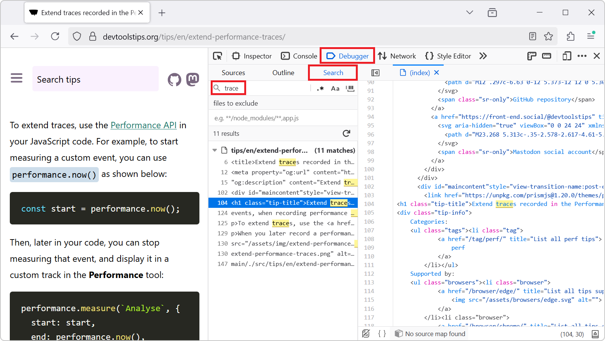
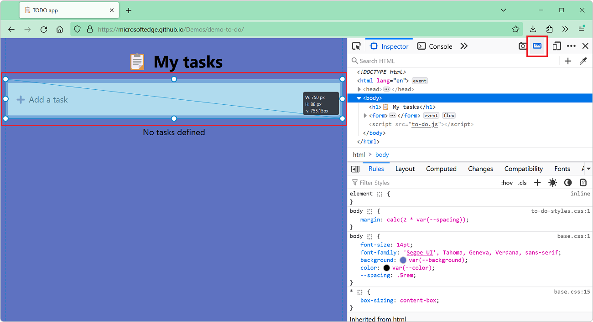

20 Productivity tips
-
Find in files

To find occurrences of a string in all of the files of the webpage you are inspecting, for example to find where a specific CSS class is defined, or where a specific JavaScript API is used: In Firef... Read more
-
Convert images to data-urls
 A data URL is a URL that starts with the prefix data: instead of http: or https:. This data prefix (or scheme) allows you to embed the actual content of the resource in the URL itself, rather than lin... Read more
A data URL is a URL that starts with the prefix data: instead of http: or https:. This data prefix (or scheme) allows you to embed the actual content of the resource in the URL itself, rather than lin... Read more -
Inspect DevTools with DevTools
 The user interface of DevTools is built with HTML, CSS, and JavaScript. This means you can inspect and debug DevTools with DevTools. Chromium # To debug DevTools in Chromium-based browsers, such as Ch... Read more
The user interface of DevTools is built with HTML, CSS, and JavaScript. This means you can inspect and debug DevTools with DevTools. Chromium # To debug DevTools in Chromium-based browsers, such as Ch... Read more -
Measure arbitrary distances in the page

Do you need to find out the dimensions of any element or area in the page? Or perhaps the distance between two things? If you do, Firefox DevTools may be the right tool for the job. First, enable the... Read moreCategories: Supported by:
-
Simulate multiple devices that are kept in sync
 Instead of simulating devices one by one and switching between them, Polypane supports testing on multiple simulated devices and viewports at the same time. It lets you test different simulated device... Read moreCategories: Supported by:
Instead of simulating devices one by one and switching between them, Polypane supports testing on multiple simulated devices and viewports at the same time. It lets you test different simulated device... Read moreCategories: Supported by: -
Autofill forms for testing
 In Polypane you can right-click any form on the page and select Autofill form to add dummy values to all input elements. This prevents you from having to go field-by-field to fill in all required fiel... Read moreCategories: Supported by:
In Polypane you can right-click any form on the page and select Autofill form to add dummy values to all input elements. This prevents you from having to go field-by-field to fill in all required fiel... Read moreCategories: Supported by: -
Reload a page when there's changes on disk
 While working on a page locally and you're not using a hot reloading dev server, you need to reload the browser yourself to see the change. You need to do this every time you save a file. Wouldn't it... Read moreCategories: Supported by:
While working on a page locally and you're not using a hot reloading dev server, you need to reload the browser yourself to see the change. You need to do this every time you save a file. Wouldn't it... Read moreCategories: Supported by: -
Remove annoying page overlays and other elements
 A lot of websites these days get covered with overlays and crammed with lots of ads and other things that make it hard to just read the content of the page. To get rid of an annoying overlay, or any o... Read more
A lot of websites these days get covered with overlays and crammed with lots of ads and other things that make it hard to just read the content of the page. To get rid of an annoying overlay, or any o... Read more -
Jump from a label `for` attribute to the linked input (and more)
 In HTML, it's possible for certain attributes to reference other elements by their IDs. For example, a <label>'s for attribute can be used to link the label to the input it's associated with: &l... Read more
In HTML, it's possible for certain attributes to reference other elements by their IDs. For example, a <label>'s for attribute can be used to link the label to the input it's associated with: &l... Read more -
Empty the cache and hard refresh
 Here is a nice tip to quickly empty your cache and refresh the page, in order to test new code changes: In Chrome, or Edge, open DevTools (F12). This step is not needed for Polypane. Right-click on t... Read more
Here is a nice tip to quickly empty your cache and refresh the page, in order to test new code changes: In Chrome, or Edge, open DevTools (F12). This step is not needed for Polypane. Right-click on t... Read more -
Edit an element's attributes and tag name with the keyboard
 Using the keyboard can be faster than using a mouse in certain cases (and for some people). One such case is editing an element's tag name and attributes in DevTools. To do this, select an element in... Read more
Using the keyboard can be faster than using a mouse in certain cases (and for some people). One such case is editing an element's tag name and attributes in DevTools. To do this, select an element in... Read more -
Use document.designMode to spell check your webpage
 Amelia Bellamy-Royds shared a really cool tip to spell-check a webpage's content from DevTools: Open DevTools, and go to the Console tool. Type document.designMode = "on" and press Enter. C... Read more
Amelia Bellamy-Royds shared a really cool tip to spell-check a webpage's content from DevTools: Open DevTools, and go to the Console tool. Type document.designMode = "on" and press Enter. C... Read more -
Quickly reference React components in the console
 Zee shared a great tip on Twitter if you are working with React and have the React DevTools extension installed. You can use $r in the Console tool to reference the currently selected element in the R... Read more
Zee shared a great tip on Twitter if you are working with React and have the React DevTools extension installed. You can use $r in the Console tool to reference the currently selected element in the R... Read more -
Use full browser window for device emulation
 Emulating different devices in the browser is incredibly useful. It gets tricky when you are on a device with limited resolution as the emulated device needs to be zoomed down to fit the screen as a l... Read more
Emulating different devices in the browser is incredibly useful. It gets tricky when you are on a device with limited resolution as the emulated device needs to be zoomed down to fit the screen as a l... Read more -
Download all images from the page
 If you want to download all of the images on a webpage in one go, you can use the following few lines of JavaScript code to do it: $$('img').forEach(async (img) => { try { const src = img.src;... Read more
If you want to download all of the images on a webpage in one go, you can use the following few lines of JavaScript code to do it: $$('img').forEach(async (img) => { try { const src = img.src;... Read more -
Use commands to do things faster
 There is a command menu in Edge and Chrome that allows you to quickly access many different features of DevTools without having to navigate the UI. Press Ctrl+Shift+P on Windows or Linux (or Cmd+Shift... Read more
There is a command menu in Edge and Chrome that allows you to quickly access many different features of DevTools without having to navigate the UI. Press Ctrl+Shift+P on Windows or Linux (or Cmd+Shift... Read more -
Prototype content changes with designMode
 When creating or modifying a design prototype for the web, you may want to quickly edit content in the browser without having to find the relevant code. When you turn on designMode for the document or... Read more
When creating or modifying a design prototype for the web, you may want to quickly edit content in the browser without having to find the relevant code. When you turn on designMode for the document or... Read more -
Sample colors from the page
 Being able to sample colors from the page is super useful. Firefox, Edge and Chrome all allow you to do this in 2 different ways: In Firefox it's really simple and doesn't even require opening DevToo... Read more
Being able to sample colors from the page is super useful. Firefox, Edge and Chrome all allow you to do this in 2 different ways: In Firefox it's really simple and doesn't even require opening DevToo... Read more -
Get the selected element in the console
 If you selected an element in the Elements panel (in Chrome, Safari, Polypane or Edge) or the Inspector panel (in Firefox), you can refer to it in the console using $0. This shortcut will return the D... Read more
If you selected an element in the Elements panel (in Chrome, Safari, Polypane or Edge) or the Inspector panel (in Firefox), you can refer to it in the console using $0. This shortcut will return the D... Read more -
Expand DOM nodes recursively
 You can expand all descendants under a given DOM node in one go, to avoid having to expand each node one by one, which may take a while. In Chrome and Edge Right-click on the node you want to expand... Read more
You can expand all descendants under a given DOM node in one go, to avoid having to expand each node one by one, which may take a while. In Chrome and Edge Right-click on the node you want to expand... Read more
 edge
edge
 chrome
chrome
 firefox
firefox
 polypane
polypane
 safari
safari